五子棋的进攻
...
进攻就是，对局中迫使对手不能自由落子，必须对你的棋防守的一种手段。如果对方的应对不正确，下一手棋就可以确定取胜。下面是常见的进攻手段
- 冲四
...
黑棋冲四，如果白棋pass，黑棋下一手就可以五连胜。

- 活三
...
黑棋活三，如果白棋pass，黑棋下一手就可以活四胜。
- 做VCF
...
黑1做了VCF,如果白2 pass，黑棋下一手就可以VCF胜。
- 做VCT
...
黑1做了VCT,如果白2 pass，黑棋下一手就可以VCT胜。
- 组合进攻
...
有时，一手棋的进攻不是单一的，一手棋可以包含几个进攻。同时包含两个以上进攻。组合的进攻一般都能必胜。
- 连续进攻
...
进攻也可以连续不断的。连续使用进攻手段，逼着对方不断防守。
- 进攻和必胜的区别
...
- 进攻包含一套以上的杀
- 必胜包含好几套杀
- 进攻可以被对手防守住
- 必胜不管对手怎么防守，都防不住
五子棋的防守
...
五子棋的防守，是针对具体的进攻来进行防守的。防守的目的，是让对手原来的进攻不再成立。能够让对方原来的进攻，不再成立的落子点，是这个进攻的防点。
- 冲四的防点
- 活三的防点
...
- 连活三的防点
- 跳活三的防点
- 利用禁手增加的防点
- VCF的防点
- VCT的防点
五子棋的必胜
...
必胜就是，在棋局结束前确定的胜利。不管对手怎么应对，都有办法最终取得胜利。
- 五连
...
白棋挡了活四的一头，但是黑棋还可以五连。这是最简单的必胜。
- VCF
...
连续使用冲四（最少一次），或者活四，直到最后一手五连。在这里，活四，白棋四四，白棋冲四抓禁手也是VCF。
- VCT
- VC2
- VC1
五子棋的进攻级别
...
不同的进攻手段，都有自己的进攻级别。五连胜最大，可以无视一切进攻级别。
- 冲四级别
...
黑棋有冲四，黑棋进攻级别为冲四级别。白棋同理。
- 活三级别
...
黑棋进攻级别没有达到冲四级别，并且有活三或者VCF时，黑棋进攻级别为活三级别。白棋同理。
- 活二级别
...
黑棋进攻级别没有达到活三级别，并且有VCT时，黑棋进攻级别为活二级别。白棋同理。
- 活一级别
...
黑棋进攻级别没有达到活二级别，并且有VC2时，黑棋进攻级别为活一级别。白棋同理。
- 进攻方和防守方
...
五连 > 冲四级别 > 活三级别 > 活二级别 > 活一级别。越接近五连的进攻级别，优先级越高。在对局中，优先级高的一方属于进攻方，对手必须防守。如果双方同一级别，先落子的一方为进攻方。
...
白1活三进攻，黑2冲四，因为冲四 > 活三，进攻方变成了黑棋。
白1双活三，黑棋也有四三，双方进攻级别相等。现在黑棋先行，黑棋为进攻方，可以无视白棋双活三，直接四三杀。